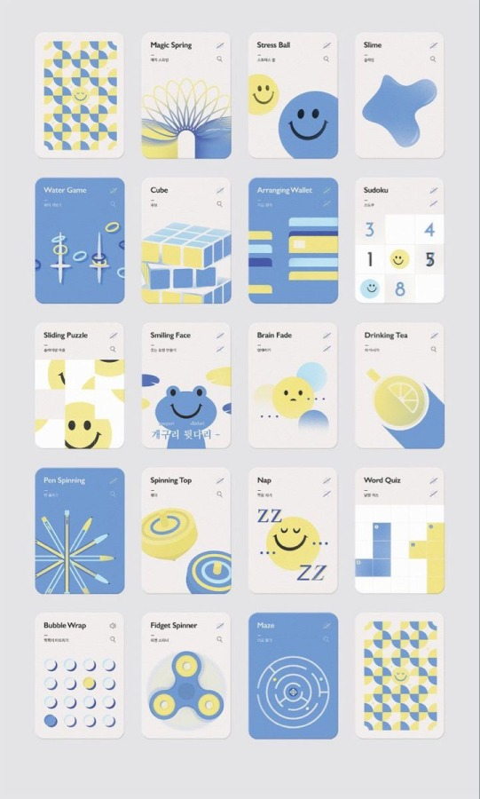
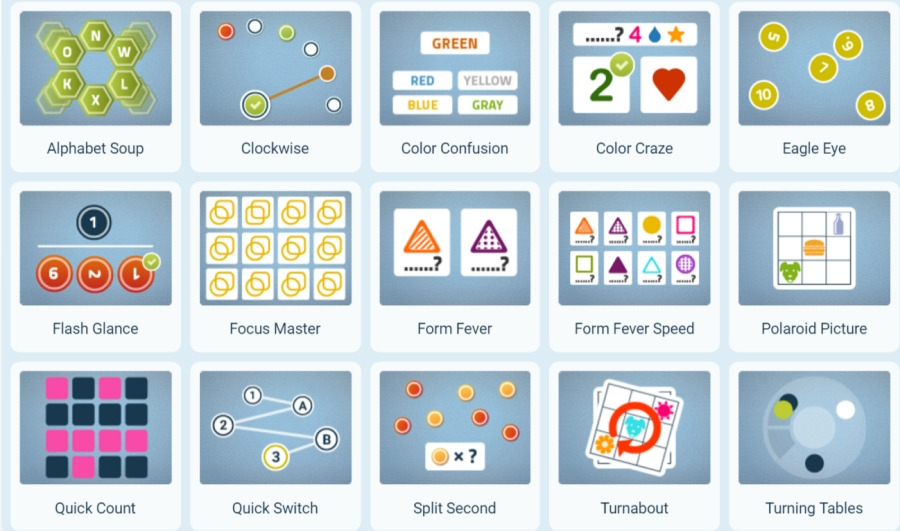
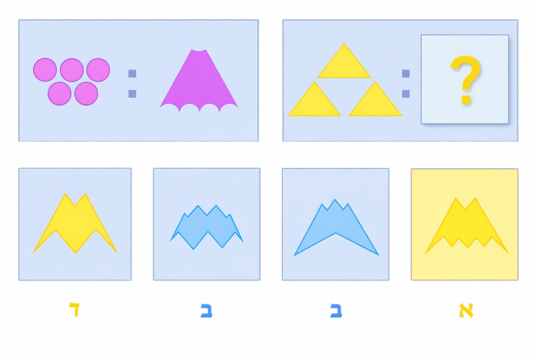
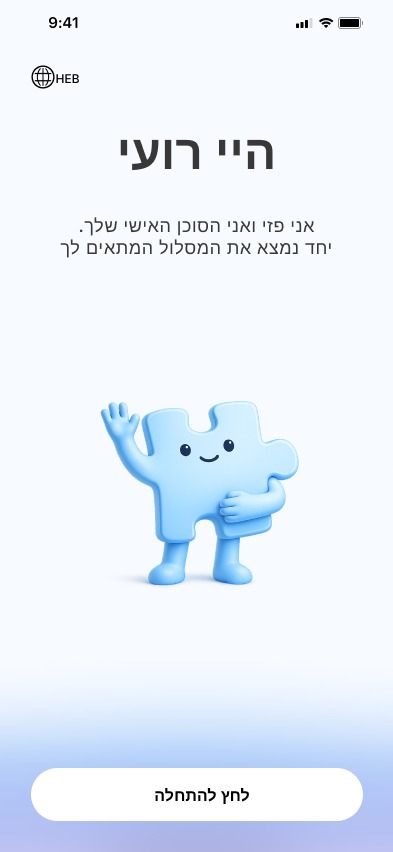
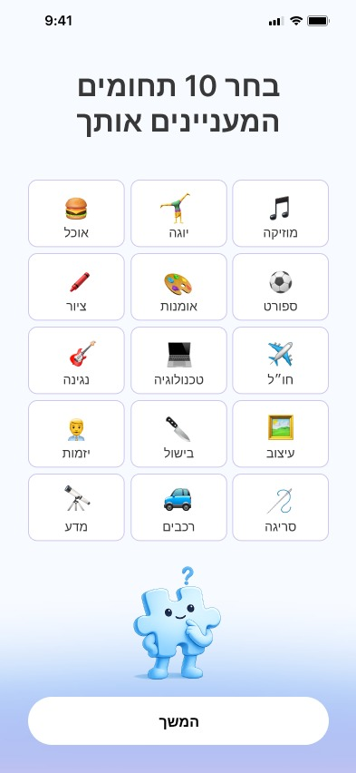
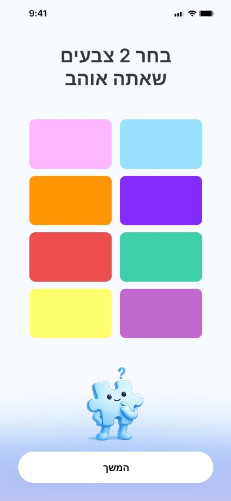
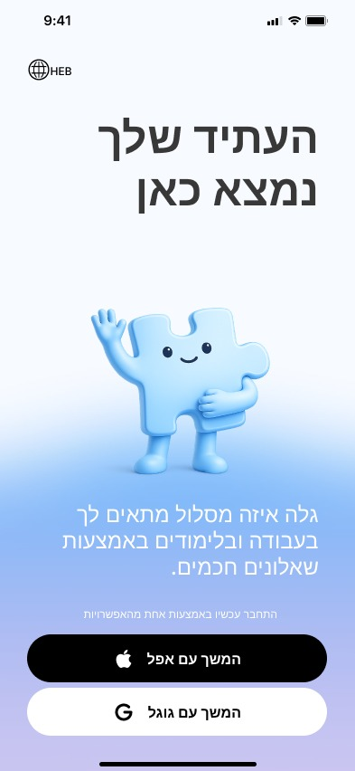
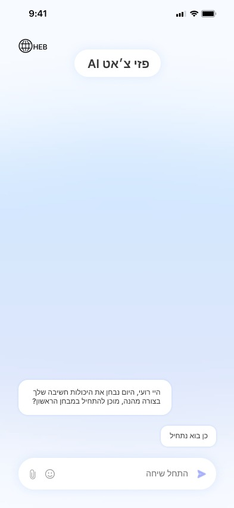

Pazi
An AI guided mobile app that helps young adults figure out what to study or work in next, no guesswork required.
UX/UI case study by Maor Cohen Falah

Guiding Israel's next generation
Pazi is a mobile app I designed to make career and study guidance personal and accessible for young adults standing at a fork in the road, especially the many Israelis in their early twenties who finish military service with no clear idea what comes next. Instead of guesswork, social pressure, or random choices, Pazi walks users through a short, game like diagnostic, interests, personality, and habits, then hands them off to an AI chat that runs a friendly thinking skills assessment and returns a shortlist of study programs and job openings actually matched to them.
No clear idea what comes next
Guessing, or copying friends
Many young Israelis, especially those just finishing mandatory service, reach a point where they have no idea what to do next: what to study, what to work in, or how to move forward. It's a common problem, but there's no personal, accessible way to work through it, most people are left guessing or copying whatever their friends are doing.
A personal, in depth profile
A new, precise, and accessible way to help people understand what actually suits them, in studies, at work, and in life direction. Pazi combines psychotechnic style questionnaires, personality tests, and an AI chat assessment to build a personal, in depth profile for every user, then matches that profile to real courses and job openings.
A quiz, not an exam
A minimalist, gamified flow that turns a process that could feel like an aptitude exam into something closer to a personality quiz, designed to keep a user like Roi, 23 and fresh out of the army, engaged from the first tap through to a results screen he can actually act on.
Turning testing into something people enjoy
Psychometric and aptitude tests carry a lot of baggage, they feel clinical, high stakes, and exhausting. Before designing the diagnostic flow, I looked at cognitive training and brain game apps to understand how they turn testing into something people actually enjoy doing.
Games over exams
The strongest cognitive assessment products replace multiple choice forms with short matching, pattern, and puzzle games that measure the same thing without feeling like a test.
A friendly face softens the stakes
A warm, illustrated mascot throughout the flow makes a process that could feel high pressure feel more like a companion walking you through it.
Instant, colorful feedback
Checkmarks, progress rings, and quick color cues keep users oriented and engaged screen to screen instead of dropping off mid questionnaire.



Meet Roi, 23
Roi Shem Tov, 23
A former Givati combat soldier who just finished his regular and reserve service. He lives in Netanya, grew up in a family with financial hardship, and wants to help support his parents and the household. He's not looking for just any job, he wants a real future and genuine financial stability for himself and his family.
An app a friend recommended
At a get together, Roi's friends talk about the programs they've started and the jobs they've landed, and how good it feels. He's frustrated, unsure how to move his own life forward. He mentions it to an army friend in the same spot, who says he found an app for exactly this. Roi looks it up, downloads it, and is pulled in by the onboarding questionnaire, he actually enjoys it and finishes the full diagnostic. Pazi returns AI matched job openings in his field, along with study programs that fit his profile.



Accessible, personal, and enjoyable alone
The design brief was simple to state and hard to execute: make a career and learning style assessment feel accessible, personal, and something people could genuinely enjoy doing alone.
A guide, not a decoration
The puzzle piece character appears at every step, waving on sign in, curious mid quiz, encouraging at the finish, giving the whole flow a consistent, friendly voice.
Short and tappable
Interests, favorite colors, sleep habits, and morning energy are each their own single focus screen with a big "Continue" button, so the diagnostic never feels like a long form.
Gamification over interrogation
Replacing typical psychometric multiple choice with icon grids and color cards keeps the tone light even though the underlying data is doing real diagnostic work.
Handing off to conversation
Once the static questionnaire ends, Pazi AI Chat takes over in a familiar messaging interface to run the thinking skills portion, so the most "test like" part of the flow feels like a chat with a friend instead of an exam.
Results that lead somewhere
The final screen doesn't just show a percentage match, it surfaces a specific course with a clear next action, "Sign up now and get a 10% discount," so the diagnostic ends in a decision, not just a data point.
From sign in to the AI chat


Calm rather than corporate
The visual identity leans into a soft, optimistic palette, blues and violets that feel calm rather than corporate, so a process that touches on real anxiety about the future stays approachable instead of clinical.
The tone of a test matters
The tone of a test matters as much as its content
The same psychometric questions land completely differently depending on whether they're framed as an exam or a game, gamification here wasn't decoration, it was the thing that kept people finishing the diagnostic.
Design for the moment someone's actually in
Building around a real persona like Roi, someone anxious about money and direction right after service, kept the flow grounded in a real emotional stake instead of an abstract "user."
A result should end in an action
Matching someone to a course or job is only half the job, the interface earns its keep by making the very next step, applying, enrolling, obvious and immediate.
Thanks for reading!
More projects
Keep exploring the work.